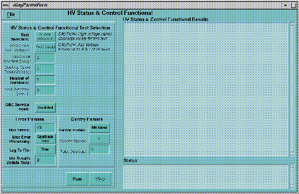

Proprietary to General Electric
Direction 5114045-800, Rev# 10
LightSpeed 4.X Service Information (Advanced)
Proprietary to General Electric |
This function tests the ability of the X-Ray interlock to disable an exposure. The test opens and closes the STC and DIP Board interlock relays and verifies the state of the Gentry I/O interlock sensor. In the event of a fault, the test allows the user to loop on this condition indefinitely, for troubleshooting purposes.
Select [DIAGNOSTICS] .
Select [X-RAY GENERATION] .
Select [ X-RAY INTERLOCK] .
| NOTE: | When making selections:
|
Illustration 1: X-Ray Interlock Functional Test Results Example
